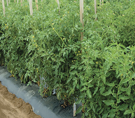
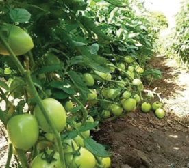

Figure 8.2(c): Semi-determinate tomato
Planning for tomato production
Starting a tomato farm needs planning. First, learn about the tomato market. Speak to sellers and buyers. Ask them questions such as what tomato type is mostly needed, when prices are high, how much volume buyers need, and what varieties are preferred. Use this information to decide when to produce tomatoes for higher profits. Next, choose the type of tomatoes you want to grow. Check if you have enough water, because tomatoes need regular watering to grow well. This information will help you to start your tomato farm. To do this well, prepare a tomato production calendar. This tells you when to do important tasks. It also tells you what tools and materials you need and how much they cost.
Activity 8.1
1.
Use an internet or a library to find out about different types of tomatoes that are commonly grown in Tanzania.
Look for information about how tomato is grown, cared for, harvested, processed, and marketed.
2.
Go to your school garden or a nearby tomato farm.
Learn from the gardener on how tomato is grown, taken care of, harvested, processed, and sold.
3.
Write down the lessons you have learnt from the tasks 1 and 2 above.
Growing tomato
To grow tomatoes, first, find a place with good soil and climatic conditions. Prepare a nursery for your seedlings. Prepare a seedbed for your tomatoes. This is where they will grow. Choose the best seeds and sow them in the nursery. When they are about 20 to 30 days old, 12 – 15 cm tall and have developed 2 to 4 true leaves, move them to the main seedbed. Learn to give your tomatoes the right amount of water and nutrients. Once your tomato plants are in the garden, you may need to carry out trellising or staking. This is a method used to support the plants and allow them to